| 亚洲 |
|
| 中国军阀 |
| 中东 |
| 亚洲 |
|
| 中东 |
|
| 苏联 |
|
| 印度土邦 |
|
| 印度尼西亚土邦 |
|
原页面：Formable nations/Asia
以下是通过 /Hearts of Iron IV/common/decisions/formable_nation_decisions.txt 文件中的决议、或任何其他标注为「可成立国家决议」的决议文件所主要成立的国家。
以下主要是通过决议成立的国家，位于/Hearts of Iron IV/common/decisions/formable_nation_decisions.txt文件之外、未被标注为可成立国家的 .txt 文件中。
以下国家通过其他方式成立。
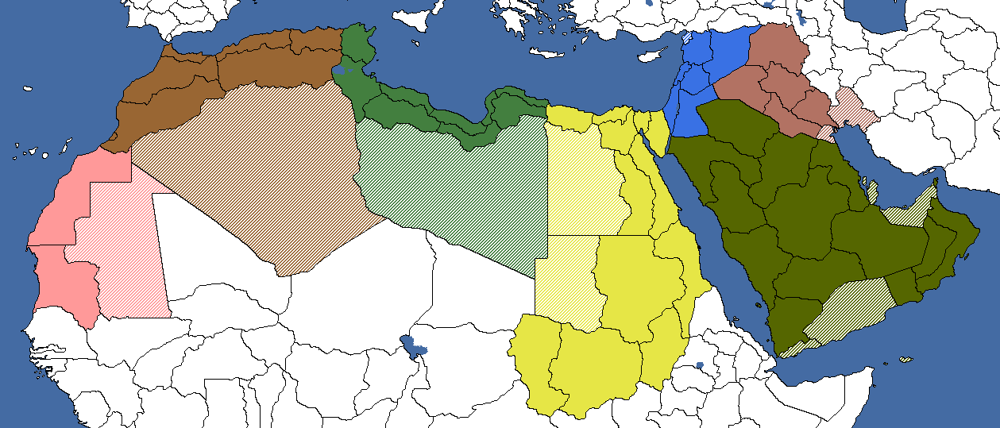
| 意识形态 | 国家名称 |
|---|---|
| 阿拉伯联邦 | |
| 阿拉伯社会主义共和国联盟 | |
| 阿拉伯帝国 | |
| Arabia |
Arabia代表一个统一所有阿拉伯人的单一阿拉伯国家，可由中东北非地区的任一阿拉伯国家成立，并要求控制历史上的阿拉伯世界，包括中东（黎凡特）、阿拉伯半岛和北非。统一的阿拉伯这一理念几乎与阿拉伯人本身一样古老，但本页所描绘的版本基于一战期间英国 与奥斯曼帝国境内阿拉伯分离主义者之间通过麦克马洪—侯赛因通信作出的承诺。根据该承诺，联合王国同意承认阿拉伯独立并给予阿拉伯人一个统一的独立国家，以换取阿拉伯人与英国合作并对奥斯曼人发动起义。
与奥斯曼帝国境内阿拉伯分离主义者之间通过麦克马洪—侯赛因通信作出的承诺。根据该承诺，联合王国同意承认阿拉伯独立并给予阿拉伯人一个统一的独立国家，以换取阿拉伯人与英国合作并对奥斯曼人发动起义。
然而，这一承诺从未实现，因为它在 1916—1917 年被 法国与英国
法国与英国 之间签订的《赛克斯-皮科协定》所取代，双方在其中自行瓜分了阿拉伯的部分地区，而把其余领土留给了沙特阿拉伯、
之间签订的《赛克斯-皮科协定》所取代，双方在其中自行瓜分了阿拉伯的部分地区，而把其余领土留给了沙特阿拉伯、 伊拉克、也门
伊拉克、也门 和阿曼，由此造就了一批独立却弱小、分裂的阿拉伯国家。
和阿曼，由此造就了一批独立却弱小、分裂的阿拉伯国家。

一旦完成统一阿拉伯半岛决议，以下决议将变为可用：
这是一个通过 阿富汗国策树获得的可成立国家。要成立阿富汗-巴基斯坦联邦，玩家首先需要完成国策「追求我们自己的议程」，并沿着该分支向下经过国策「提议与巴基斯坦组建联邦」。要能完成「追求我们自己的议程」，玩家需要在前线拥有师级单位中至少 120k 人力，且战争支持度高于 40%。该国在完成国策「加强联邦」时成立，并给予玩家巴基斯坦各州的核心领土。值得注意的是，这包括英属印度
阿富汗国策树获得的可成立国家。要成立阿富汗-巴基斯坦联邦，玩家首先需要完成国策「追求我们自己的议程」，并沿着该分支向下经过国策「提议与巴基斯坦组建联邦」。要能完成「追求我们自己的议程」，玩家需要在前线拥有师级单位中至少 120k 人力，且战争支持度高于 40%。该国在完成国策「加强联邦」时成立，并给予玩家巴基斯坦各州的核心领土。值得注意的是，这包括英属印度 的东孟加拉州，该州在历史上曾有一段时间属于巴基斯坦。
的东孟加拉州，该州在历史上曾有一段时间属于巴基斯坦。


| 意识形态 | 国家名称 |
|---|---|
| 阿富汗-巴基斯坦联邦 | |
| 阿富汗-巴基斯坦联邦 | |
| 阿富汗-巴基斯坦联邦 | |
| 阿富汗-巴基斯坦联邦 |
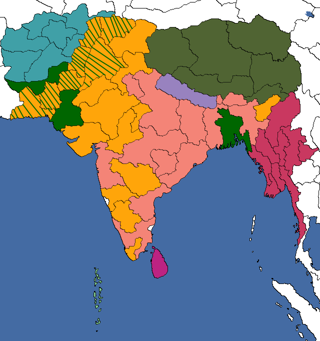
| 意识形态 | 国家名称 |
|---|---|
| 阿克汉德·巴拉特 | |
| 阿克汉德·巴拉特 | |
| 阿克汉德·巴拉特 | |
| 阿克汉德·巴拉特 |
阿克汉德·巴拉特是一个可通过 英属印度的国策法西斯
英属印度的国策法西斯 分支成立的国家。成立阿克汉德·巴拉特的路线始于国策「走上独立之路」，沿该分支向下完成互斥国策「反甘地主义联盟」，接着是「前进集团」，然后是「印度教特性」。此时玩家可以完成国策「阿克汉德·巴拉特」，并获得决议来获取核心领土并向邻国领土扩张。一旦玩家通过决议获得所有新的核心领土，他们最终可以通过最后一个决议成立阿克汉德·巴拉特。
分支成立的国家。成立阿克汉德·巴拉特的路线始于国策「走上独立之路」，沿该分支向下完成互斥国策「反甘地主义联盟」，接着是「前进集团」，然后是「印度教特性」。此时玩家可以完成国策「阿克汉德·巴拉特」，并获得决议来获取核心领土并向邻国领土扩张。一旦玩家通过决议获得所有新的核心领土，他们最终可以通过最后一个决议成立阿克汉德·巴拉特。
一旦完成上述决议、你控制并拥有这些州的核心，便可宣告成立阿克汉德·巴拉特。
当任何一个军阀通过决议与民族主义者结盟并试图夺取中国的领导权时，该国便告成立。若 中国拒绝该军阀国家的领导，该国将转变为 CC 派系。
中国拒绝该军阀国家的领导，该国将转变为 CC 派系。
| 意识形态 | 国家名称 |
|---|---|
| 中华共和政府 | |
| 中国人民共和国 | |
| 中华民国维新政府 | |
| CC 派系 |
中华帝国代表清朝的复辟——清朝是中国最后一个帝制王朝，建于 1636 年，自 1644 年起统治中国，直至 1911—1912 年武昌起义与辛亥革命中覆亡（此后于 1917 年 7 月短暂复辟）。它是一个特殊的可成立国家，只能由 满洲国通过国策「宣称天命」成立。
满洲国通过国策「宣称天命」成立。

要成立该国，满洲国必须首先选取国策「收复帝国」，这将授予他们所有中国州的核心领土（即 中国、
中国、 桂系、东北军
桂系、东北军 、粤系、
、粤系、 川系、冀察
川系、冀察 、鲁系
、鲁系  滇系、青马（马家军）
滇系、青马（马家军） 、甘马（马家军）、
、甘马（马家军）、 和田马家军、宁马（马家军）
和田马家军、宁马（马家军） 、晋系、中国共产党中国、
、晋系、中国共产党中国、 新疆所控制的全部领土，加上法国
新疆所控制的全部领土，加上法国 、英国、
、英国、 葡萄牙和日本
葡萄牙和日本 的中国领土），然后征服上述中国州，但香港
的中国领土），然后征服上述中国州，但香港  (326)、香港
(326)、香港 (326)、
(326)、 广州湾 (728)
广州湾 (728) 和Taiwan
和Taiwan  (524)除外。此后，选取国策「宣称天命」将成立中华帝国
(524)除外。此后，选取国策「宣称天命」将成立中华帝国 。
。

成立后，满洲国将改名为中华帝国，将颜色改为更深的黄色，并采用清朝的旗帜作为国旗。满洲国领袖爱新觉罗·溥仪将把他的肖像换成身穿中国皇帝传统袍服的形象，几天后还会触发一个事件，详述清朝的复辟以及溥仪第二次加冕为中国皇帝，从而消除了 1911—1912 年武昌起义与辛亥革命造成的损害。
若有人希望恢复清朝的历史疆界，就应选取国策「一个中国政策」来征服所有中国州（包括 西藏），然后选取国策「要求蒙古」来吞并
西藏），然后选取国策「要求蒙古」来吞并 蒙古和唐努乌梁海。此外，为重新征服外满洲，还应吞并符拉迪沃斯托克
蒙古和唐努乌梁海。此外，为重新征服外满洲，还应吞并符拉迪沃斯托克 (408)、
(408)、 哈巴罗夫斯克 (409)、比罗比詹 (657)、尼古拉耶夫斯克 (560)和阿穆尔 (561)各州，将它们从苏联手中夺走。
哈巴罗夫斯克 (409)、比罗比詹 (657)、尼古拉耶夫斯克 (560)和阿穆尔 (561)各州，将它们从苏联手中夺走。
| 意识形态 | 国家名称 |
|---|---|
| 中华君主立宪国 | |
| 中国人民共和国联盟 | |
| 中华帝国 | |
| 中华帝国 |
完成「中华帝国复辟」的中国军阀将视其所属国家而成立以下国家之一：
东印度公司最初是一家英格兰公司，后来成为英国公司，创立于 1600 年，1857 年解散。不过，作为英属印度，你可以「放眼未来」并重建东印度公司，从而让你用民用工厂购买土地。最终通过国策「品牌重塑」，你可以将你拥有的任何州转为核心领土，只需满足所需的顺从度与抵抗度。

有些州最初不属于任何国家的核心领土，但它们最终可以获得核心，然后再被东印度公司转为核心领土。不过，这些事件大多很难与东印度公司的正常游戏进程配合起来。见下方列表。
| 意识形态 | 国家名称 |
|---|---|
| 东印度公司 | |
| 东印度公司 | |
| 东印度公司 | |
| 东印度公司 |
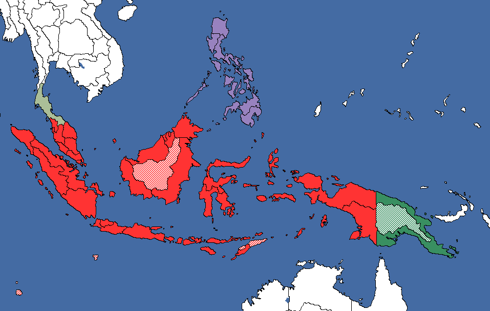
| 意识形态 | 国家名称 |
|---|---|
| 大印度尼西亚邦联 | |
| 努山塔拉民主社会主义共和国 | |
| 大马来由 | |
| Nusantara |
大印度尼西亚邦联代表一个统一的印度尼西亚国家（具体而言是曾于 13 世纪达到鼎盛的南岛实体室利佛逝与满者伯夷帝国），可由英属马来亚成立，并要求该国完全独立并与荷属东印度 统一在同一面旗帜下才能成立。若未启用雷霆临门 DLC，荷属东印度也可以创建这个可成立国家。
统一在同一面旗帜下才能成立。若未启用雷霆临门 DLC，荷属东印度也可以创建这个可成立国家。
建立一个横跨群岛、以共同公民身份（而非族群或宗教身份）为纽带的国家的构想，最早由早期东印度民族主义者埃内斯特·道韦斯·德克尔在 1910 年代提出；他特别以努山塔拉作为未来国家的名字，并以前室利佛逝与满者伯夷帝国作为这一构想的基础。著名印尼马克思主义者陈马六甲后来在 1926 年自己的“统一印度尼西亚”构想中加入了马来亚、北婆罗洲、东巴布亚、东帝汶和 菲律宾，宣扬各殖民地原住民在血统上都是印度尼西亚人，只是被殖民列强所分隔。
菲律宾，宣扬各殖民地原住民在血统上都是印度尼西亚人，只是被殖民列强所分隔。
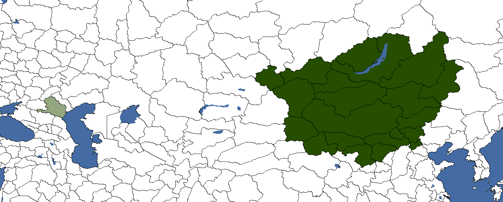
| 意识形态 | 国家名称 |
|---|---|
| 大蒙古联邦 | |
| 大蒙古苏维埃共和国 | |
| 大蒙古帝国 | |
| 大蒙古汗国 |
大蒙古国可由 蒙古、蒙疆
蒙古、蒙疆 以及哈密汗国在被
以及哈密汗国在被 新疆通过国策进军于阗
新疆通过国策进军于阗 释放之后成立。该可成立国家代表着成吉思汗及其部众治下那个更古老、疆域大得多的蒙古国的复兴。
释放之后成立。该可成立国家代表着成吉思汗及其部众治下那个更古老、疆域大得多的蒙古国的复兴。
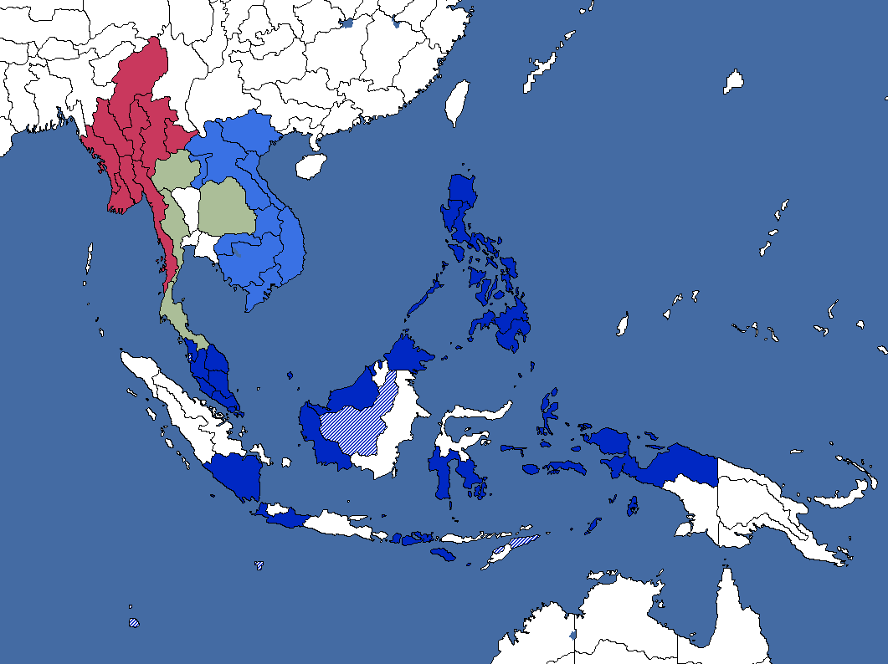
马来亚各族人民联邦可以由两个国家以两种方式成立：荷属东印度 可以在批准「苏塔佐请愿书」之后，通过在马来统一决议中提议“马来印度”，开始与苏塔佐谈判，成为民主的印度尼西亚，并最终在 1936 年《苏塔佐法案》获批后建立独立的印度尼西亚共和国，从而创建这个可成立国家。另一方面，菲律宾只需吞并印度尼西亚和
可以在批准「苏塔佐请愿书」之后，通过在马来统一决议中提议“马来印度”，开始与苏塔佐谈判，成为民主的印度尼西亚，并最终在 1936 年《苏塔佐法案》获批后建立独立的印度尼西亚共和国，从而创建这个可成立国家。另一方面，菲律宾只需吞并印度尼西亚和 英属马来亚，即可通过决议成立马来印度
英属马来亚，即可通过决议成立马来印度 统一马来亚各族人民。
统一马来亚各族人民。
| 意识形态 | 国家名称 |
|---|---|
| 马来亚各族人民联邦 | |
| 马来亚各族人民联盟 | |
| 马来亚帝国 | |
| 马来亚各族人民联邦 |
东南亚国家联盟只能由马来亚各族人民联邦创立，这与菲律宾 不同。为此，该国需要先通过吞并荷属东印度以及
不同。为此，该国需要先通过吞并荷属东印度以及 英属马来亚成立马来印度，然后整合暹罗、印度支那或缅甸中的任意一个。
英属马来亚成立马来印度，然后整合暹罗、印度支那或缅甸中的任意一个。
| 意识形态 | 国家名称 |
|---|---|
| 东南亚国家联盟 | |
| 东南亚国家联盟 | |
| 东南亚国家联盟 | |
| 东南亚国家联盟 |
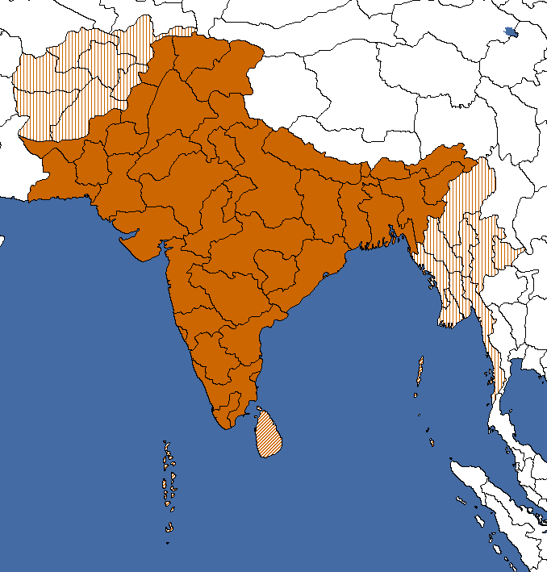
Hindustan可由 尼泊尔或不丹
尼泊尔或不丹 与印度土邦之一成立，代表着印度次大陆更广泛的统一，因为波斯语名称“印度斯坦”历来就是用来指称整个地区的名称。
与印度土邦之一成立，代表着印度次大陆更广泛的统一，因为波斯语名称“印度斯坦”历来就是用来指称整个地区的名称。
| 意识形态 | 国家名称 |
|---|---|
| 印度斯坦联邦 | |
| 印度斯坦联盟 | |
| 印度斯坦帝国 | |
| Hindustan |
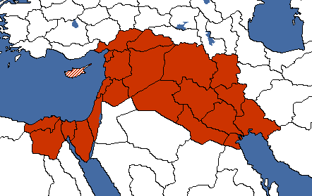
| 意识形态 | 国家名称 |
|---|---|
| 新月沃地共和国 | |
| 美索不达米亚人民共和国 | |
| 新美索不达米亚帝国 | |
| 美索不达米亚王国 |
Mesopotamia是一个可成立国家，代表着历史上的第一个文明。它涵盖尼罗河、底格里斯河与幼发拉底河及其周边的土地。这是一个在游戏开始时就对（被释放时的）埃及、巴勒斯坦、黎巴嫩和叙利亚可用的决议。 伊拉克可以在成立库尔德斯坦之后创建这个可成立国家。
伊拉克可以在成立库尔德斯坦之后创建这个可成立国家。


成立时，成立美索不达米亚的国家将改变颜色和旗帜。
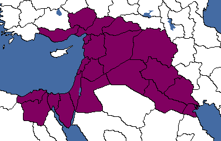
| 意识形态 | 国家名称 |
|---|---|
| 亚述各族人民崇高联邦 | |
| 亚述苏维埃社会主义共和国联盟 | |
| 大新亚述帝国 | |
| 新亚述帝国 |
新亚述帝国是一个可成立国家，代表着许多世纪前崩溃的古代帝国之一。然而亚述人至今仍然存在，你可以通过一项决议重拾他们的荣光。这是一个亚述国专属的可成立国家。
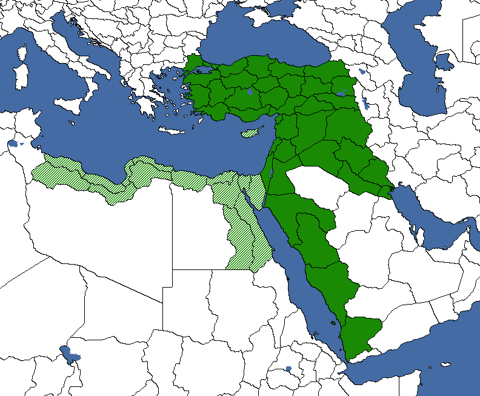
奥斯曼苏丹国是一个可成立国家，代表着 1299 年建立的土耳其国家，它在 14 至 20 世纪间主宰了中东与阿拉伯地区，其间最常被称为奥斯曼帝国。它从 18 世纪中期起进入停滞与衰落期，最终因参与第一次世界大战而在 1918 年崩溃，并于 1922—1923 年正式解散， 土耳其成为其继承国。
土耳其成为其继承国。

在 博斯普鲁斯之战 DLC 中，
博斯普鲁斯之战 DLC 中， 土耳其获得了自己的国策树，使土耳其
土耳其获得了自己的国策树，使土耳其 能够通过国策「苏丹归来」成立奥斯曼苏丹国。这样做还会把首都迁至伊斯坦布尔，并将其更名为科斯坦丁尼耶。
能够通过国策「苏丹归来」成立奥斯曼苏丹国。这样做还会把首都迁至伊斯坦布尔，并将其更名为科斯坦丁尼耶。

在选取国策「收复马其顿桑贾克」之后，你可以通过以下决议扩张苏丹国。
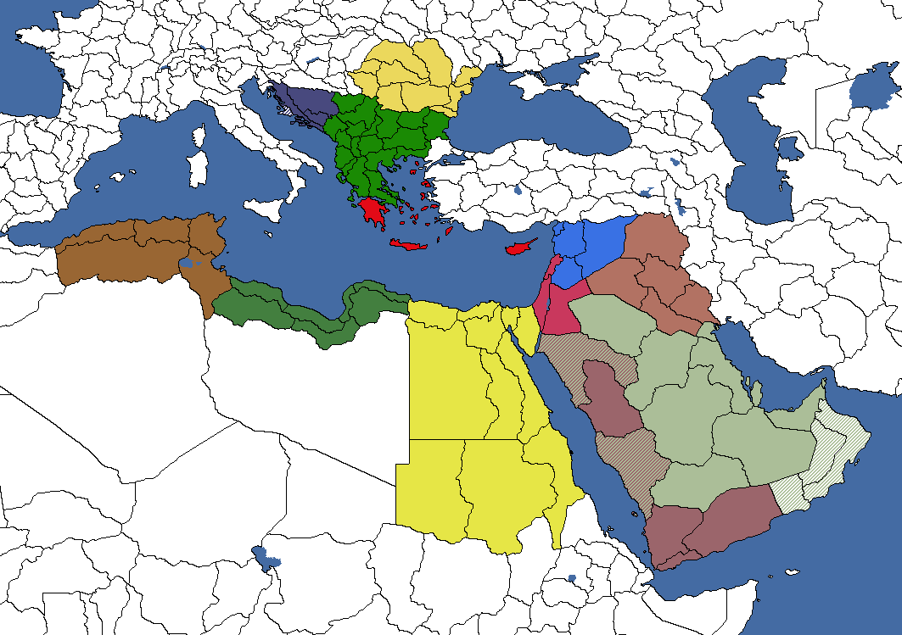
国策「收复陨落帝国」将你变为奥斯曼帝国。该焦点还允许你通过以下决议进一步扩张帝国。
「大马士革最后通牒」国策还可以让你通过以下决议进一步扩张帝国。
| 意识形态 | 国家名称（苏丹国） | 国家名称（帝国） |
|---|---|---|
| 奥斯曼联邦 | ||
| 奥斯曼社会主义共和国 | ||
| 奥斯曼最高国 | 奥斯曼最高主权 | |
| 奥斯曼苏丹国 | 奥斯曼帝国 |
不可与可释放国家 普什图尼斯坦酋长国混为一谈，这是一个通过阿富汗
普什图尼斯坦酋长国混为一谈，这是一个通过阿富汗 国策树获得的可成立国家。要成立普什图尼斯坦，玩家首先需要完成国策「宣布共和国」，随后弹出事件“阿富汗的未来”，它允许你为阿富汗选择想要的身份认同。选择选项“我们首先是普什图人的国家”将让你得以成立普什图尼斯坦，并获得巴基斯坦部分地区的核心领土。
国策树获得的可成立国家。要成立普什图尼斯坦，玩家首先需要完成国策「宣布共和国」，随后弹出事件“阿富汗的未来”，它允许你为阿富汗选择想要的身份认同。选择选项“我们首先是普什图人的国家”将让你得以成立普什图尼斯坦，并获得巴基斯坦部分地区的核心领土。

第二种选择是走「对抗喀布尔」的路线，你将获得三条拥立埃米尔的路线。若你拥立金色埃米尔，它最终会让你能够执行国策「统一普什图尼斯坦」。这让你得以成立普什图尼斯坦，并能够「宣告新哈里发国」，从而将任何穆斯林州转为核心领土。
这是普什图尼斯坦的一个变体，是一个不同的可成立国家：走「对抗喀布尔」路线，但不选择埃米尔，而是「联系阿曼努拉保皇派」。国策「普什图尼斯坦崛起」会成立普什图尼斯坦崛起，你将能够成为圣地的救主。
| 意识形态 | 国家名称 | Variants |
|---|---|---|
| 普什图尼斯坦共和国 | 普什图联合共和国 | |
| 普什图尼斯坦工人共和国 | 普什图人民共和国 | |
| 普什图尼斯坦伊斯兰国 | 普什图尼斯坦崛起 | |
| 普什图尼斯坦酋长国 | 普什图哈里发国 |
中华人民共和国既可以由 中华苏维埃共和国通过国策人民共和国
中华苏维埃共和国通过国策人民共和国 成立，也可以由某个中国军阀在与共产党合作后成立——成为新的中华苏维埃共和国（在西安事变之后），然后宣告成立人民共和国。
成立，也可以由某个中国军阀在与共产党合作后成立——成为新的中华苏维埃共和国（在西安事变之后），然后宣告成立人民共和国。
| 意识形态 | 国家名称 |
|---|---|
| 中华民国 | |
| 中华人民共和国 | |
| 中华帝国 | |
| 中国 |
波斯不可与波斯帝国的不结盟名称混为一谈，它是一个可成立国家，涉及伊朗国策树中的一条秘密路线。它代表的是 1929 年巴列维王朝推翻此前的卡扎尔王朝之前的时代。这标志着
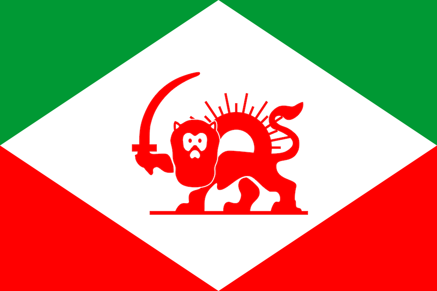
伊朗这个国家的转变，它力图实现工业化并追赶世界，因此放弃了Persia本节讲述如何成立 波斯与伊朗总督领。在你被傀儡化并向他们宣誓效忠后，你将完成国策「我们与大英帝国的位置」，伊朗总督领通常将是你的国名，而波斯总督领
波斯与伊朗总督领。在你被傀儡化并向他们宣誓效忠后，你将完成国策「我们与大英帝国的位置」，伊朗总督领通常将是你的国名，而波斯总督领 只在一种情况下使用：若你此前成立了Persia，它便会成为你的国名。
只在一种情况下使用：若你此前成立了Persia，它便会成为你的国名。

| 意识形态 | 国家名称 | 波斯总督领 | 伊朗总督领 |
|---|---|---|---|
| Persia | 波斯总督领 | 伊朗总督领 | |
| Persia | 波斯总督领 | 伊朗总督领 | |
| Persia | 波斯总督领 | 伊朗总督领 | |
| Persia | 波斯总督领 | 伊朗总督领 |
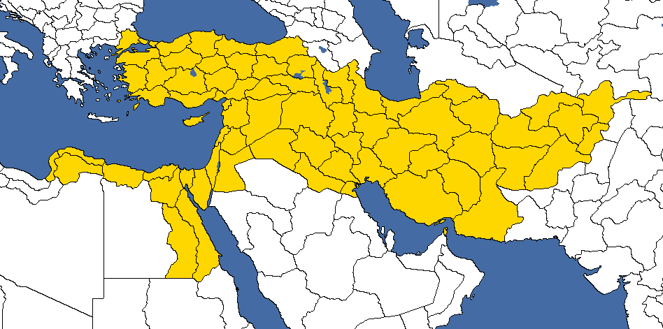
| 意识形态 | 国家名称 |
|---|---|
| 赛里克联盟 | |
| 中东社会主义共和国 | |
| 波斯帝国 | |
| Persia |
波斯帝国（不可与 伊朗混为一谈，后者若是法西斯主义则会被命名为“新波斯帝国”）代表通常被称为“波斯诸帝国”的伊朗各帝国王朝的现代化身，这些帝国从公元前 550 年到 1925 年间以各种形式断续存在。它仅可在未启用帝国坟场
伊朗混为一谈，后者若是法西斯主义则会被命名为“新波斯帝国”）代表通常被称为“波斯诸帝国”的伊朗各帝国王朝的现代化身，这些帝国从公元前 550 年到 1925 年间以各种形式断续存在。它仅可在未启用帝国坟场 DLC 时使用。
DLC 时使用。
这些是仅在你启用 帝国坟场 DLC 时才能成立的波斯帝国变体。它们位于国策树的君主主义分支中。你一旦完成「伟大遗产」，就会有一个计时器启动，进而引发内战。
帝国坟场 DLC 时才能成立的波斯帝国变体。它们位于国策树的君主主义分支中。你一旦完成「伟大遗产」，就会有一个计时器启动，进而引发内战。
这在你完成「礼萨·沙阿遇刺」之后进行，你将让其子成为统治者，从而让你得以完成「第三波斯帝国」并成立第三波斯帝国。然后，一路向下推进你的国策树，直至完成「延续千年的帝国」，它让你得以成立大波斯帝国。
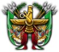
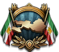
这在你完成「铲除阴谋」之后进行，你将让沙阿在暗杀中幸存，从而阻止其子成为统治者。当你完成「第一伊朗帝国」时，你便得以成立伊朗帝国。然后，一路向下推进你的国策树，直至完成「延续千年的帝国」，它让你得以成立大伊朗帝国。
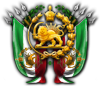
| 意识形态 | 第三波斯帝国 | 大波斯帝国 | 伊朗帝国 | 大伊朗帝国 |
|---|---|---|---|---|
| 第三波斯帝国 | 大波斯帝国 | 伊朗帝国 | 大伊朗帝国 | |
| 第三波斯帝国 | 大波斯帝国 | 伊朗帝国 | 大伊朗帝国 | |
| 第三波斯帝国 | 大波斯帝国 | 伊朗帝国 | 大伊朗帝国 | |
| 第三波斯帝国 | 大波斯帝国 | 伊朗帝国 | 大伊朗帝国 |
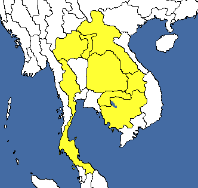
拉达那哥欣王国可由 暹罗成立，代表着暹罗从 1782 年至 1932 年革命期间所控制领土的复辟——那场革命废除了君主专制，改行君主立宪制。它仅可在未启用雷霆临门 DLC 时使用。
暹罗成立，代表着暹罗从 1782 年至 1932 年革命期间所控制领土的复辟——那场革命废除了君主专制，改行君主立宪制。它仅可在未启用雷霆临门 DLC 时使用。
| 意识形态 | 国家名称 |
|---|---|
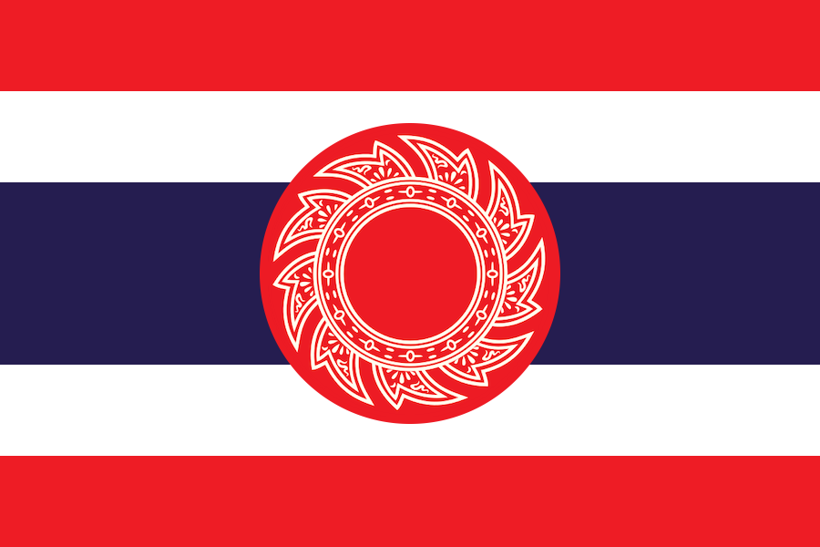 拉达那哥欣联邦 | |
| 拉达那哥欣社会主义国 | |
| 拉达那哥欣帝国 | |
| 拉达那哥欣王国 |
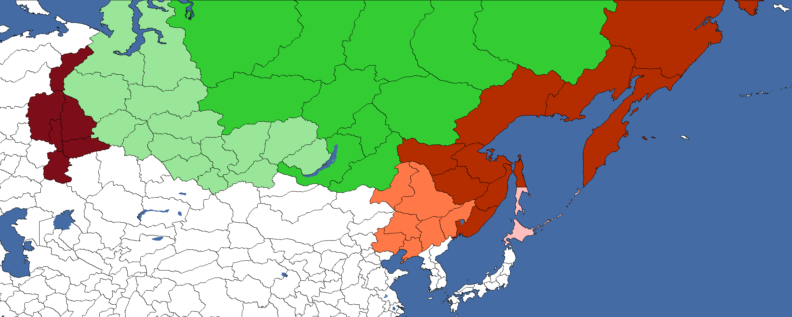
若 苏联因故解体，那么唐努乌梁海
苏联因故解体，那么唐努乌梁海 或西伯利亚的某个可释放继承国便可决定收拾这个陨落联盟的残局，通过成立统一的西伯利亚来挽救尚可挽救之物，以防乌拉尔山脉以东的土地落入外国势力影响之下。要成立西伯利亚，必须控制乌拉尔山脉以东的苏联的大片地区。成立西伯利亚之后，还可以将其扩张至包含远东共和国的领土、向西直至乌拉尔山脉，以及
或西伯利亚的某个可释放继承国便可决定收拾这个陨落联盟的残局，通过成立统一的西伯利亚来挽救尚可挽救之物，以防乌拉尔山脉以东的土地落入外国势力影响之下。要成立西伯利亚，必须控制乌拉尔山脉以东的苏联的大片地区。成立西伯利亚之后，还可以将其扩张至包含远东共和国的领土、向西直至乌拉尔山脉，以及 日本北部岛屿上阿伊努人居住的地区。
日本北部岛屿上阿伊努人居住的地区。


奇怪的是， 唐努乌梁海既能成立该国也能成立突厥斯坦，这意味着这两个可成立国家可以合并起来，把图瓦从仅有三个工厂、人口不过 85,000 人的小国，提升为拥有可观工业和数百万人口的真正的北亚列强。
唐努乌梁海既能成立该国也能成立突厥斯坦，这意味着这两个可成立国家可以合并起来，把图瓦从仅有三个工厂、人口不过 85,000 人的小国，提升为拥有可观工业和数百万人口的真正的北亚列强。
| 意识形态 | 国家名称 | 国家名称（苏联傀儡） |
|---|---|---|
| 西伯利亚共和国 | ||
| 西伯利亚独立共和国联盟 | 西伯利亚联邦苏维埃社会主义共和国 | |
| 大西伯利亚王国 | ||
| 西伯利亚多民族国家 |
帖木儿帝国是一个许多世纪前崩溃的强盛帝国。不过，它可以由 阿富汗或印度恢复。
阿富汗或印度恢复。
 印度可以走「回顾过去」的路线，与土邦一同发动莫卧儿起义，从而成立该国。国策「莫卧儿起义」将发动起义，让你成为土邦分离势力。在英国以停火介入之前，你只有有限的时间从英属印度手中夺取尽可能多的土地。
印度可以走「回顾过去」的路线，与土邦一同发动莫卧儿起义，从而成立该国。国策「莫卧儿起义」将发动起义，让你成为土邦分离势力。在英国以停火介入之前，你只有有限的时间从英属印度手中夺取尽可能多的土地。


 阿富汗可以走「对抗喀布尔」的路线来成立它，在内战结束后你将获得三条拥立埃米尔的路线。完成国策「邀请莫卧儿王子」将使阿富汗以莫卧儿埃米尔国的名义为人所知。一路向下推进到国策「恢复帖木儿帝国」将让你得以成立帖木儿帝国。
阿富汗可以走「对抗喀布尔」的路线来成立它，在内战结束后你将获得三条拥立埃米尔的路线。完成国策「邀请莫卧儿王子」将使阿富汗以莫卧儿埃米尔国的名义为人所知。一路向下推进到国策「恢复帖木儿帝国」将让你得以成立帖木儿帝国。
| 意识形态 | 国家名称 |
|---|---|
| 帖木儿共和国 | |
| 帖木儿社会主义共和国 | |
| 帖木儿联盟 | |
| 帖木儿帝国 |
图兰（或称图兰帝国）是一个可成立国家，代表着来自内亚与中亚地区诸民族之间的某种统一。图兰主义是泛突厥主义与阿尔泰假说共同的产物，后者认为欧亚大陆的突厥、蒙古、西伯利亚、满洲、朝鲜乃至芬兰-乌戈尔和日本诸民族共享一个共同的“阿尔泰”起源（以阿尔泰山命名）。阿尔泰假说已不再被学者广泛接受，但仍得到少数专注的语言学家和人类学家的支持。图兰可以与其他事物一道，“统一”西北三马、匈牙利、芬兰、爱沙尼亚和卡累利阿。


事实上，成立图兰要求土耳其或多或少扮演一个流氓国家的角色，试图违背列强的意愿谋取自身利益，这很可能意味着在外交和军事上都引发相当大的风波（而且极有可能在此过程中从中国 身上撕下一大块，并拆散苏联的大部分）。
身上撕下一大块，并拆散苏联的大部分）。

成立图兰（在完成国策「图兰主义野心」后成为可能）还会授予相当一片土地的核心领土，提供可观的兵力和工业，此外图兰还能获得独特的图兰主义同化修正、可从国策树中获取的独有且极其强大的和解 occupation law，以及三位极其强大的图兰主义部长——任命他们可为核心与非核心可招募人力带来显著加成，并提升顺从度增长。所有这些工具都将有助于让这个人为缔造的帝国保持统一，并赋予它扩张到更高高度的手段。
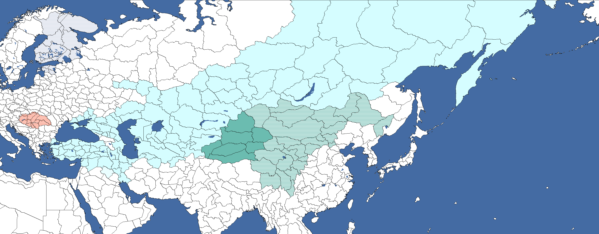
以下决议将尼哈尔·阿特瑟兹的设为国家领袖：
以下决议分别需要征服马扎尔人、中国突厥人和以芬兰-乌戈尔为自己加冕国策。它们赋予各州图兰主义同化修正而非核心领土，从而带来非核心人力+25.00%、抵抗度增长速度-10%和顺从度增长速度+5%。「同化中国突厥人」还会额外授予核心领土。
| 意识形态 | 国家名称 |
|---|---|
| 图兰联邦 | |
| 突厥社会主义共和国联盟 | |
| 图兰汗国 | |
| Turan |
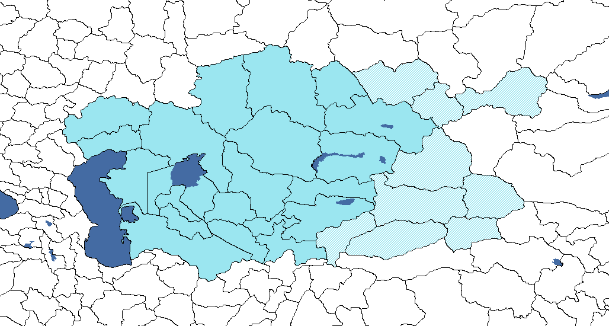
若 苏联因故解体，那么中亚的某个可释放继承国便可决定收拾这个陨落联盟的残局，通过成立统一的突厥斯坦来挽救尚可挽救之物，以团结中亚的突厥诸民族，并重拾昔日伟大的突厥-蒙古或鞑靼诸汗的遗产。
苏联因故解体，那么中亚的某个可释放继承国便可决定收拾这个陨落联盟的残局，通过成立统一的突厥斯坦来挽救尚可挽救之物，以团结中亚的突厥诸民族，并重拾昔日伟大的突厥-蒙古或鞑靼诸汗的遗产。
奇怪的是， 唐努乌梁海既能成立该国也能成立西伯利亚，这意味着这两个可成立国家可以合并起来，把图瓦从仅有三个工厂、人口不过 85,000 人的小国，提升为拥有可观工业和数百万人口的真正的北亚列强。
唐努乌梁海既能成立该国也能成立西伯利亚，这意味着这两个可成立国家可以合并起来，把图瓦从仅有三个工厂、人口不过 85,000 人的小国，提升为拥有可观工业和数百万人口的真正的北亚列强。
| 意识形态 | 国家名称 | 国家名称（苏联傀儡国） |
|---|---|---|
| 突厥联邦共和国 | ||
| 突厥各族人民共和国 | 突厥自治苏维埃社会主义共和国 | |
| 突厥帝国 | ||
| 突厥汗国 |
阿拉伯联合共和国是伊拉克 通过其法西斯国策分支可成立的国家，该分支始于国策「民族兄弟党」。要成立阿拉伯联合共和国，玩家需要沿国策树推进并完成国策「宣告阿拉伯联合共和国」。这条路线给予玩家决议，将他们拥有的被征服阿拉伯州转为核心领土。
通过其法西斯国策分支可成立的国家，该分支始于国策「民族兄弟党」。要成立阿拉伯联合共和国，玩家需要沿国策树推进并完成国策「宣告阿拉伯联合共和国」。这条路线给予玩家决议，将他们拥有的被征服阿拉伯州转为核心领土。
| 意识形态 | 国家名称 |
|---|---|
| 阿拉伯联合国家 | |
| 阿拉伯社会主义国家 | |
| 阿拉伯联合共和国 | |
| 阿拉伯联合共和国 |
这是一个可成立国家，代表着统称为西北三马的马氏诸影响力家族，他们各自分别控制着甘肃、宁夏和青海的部分地区。因此，由于 NCNS DLC，昔日为人所知的西北三马国家已被拆解为四分五裂的马家军集团。它可由任何一个可用的马家军阀国家成立。
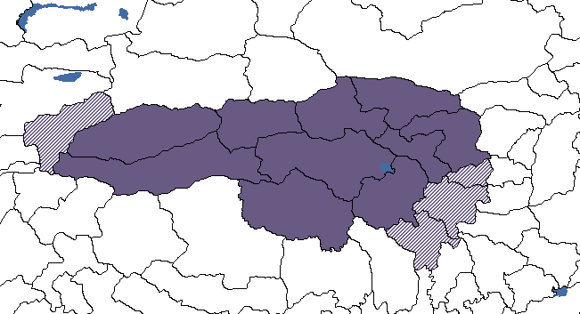
| 意识形态 | 国家名称 |
|---|---|
| 回族共和国 | |
| 回族人民共和国 | |
| 统一回族王国 | |
| 西北三马 |
| 亚洲 |
|
| 中国军阀 |
| 中东 |
| 亚洲 |
|
| 中东 |
|
| 苏联 |
|
| 印度土邦 |
|
| 印度尼西亚土邦 |
|